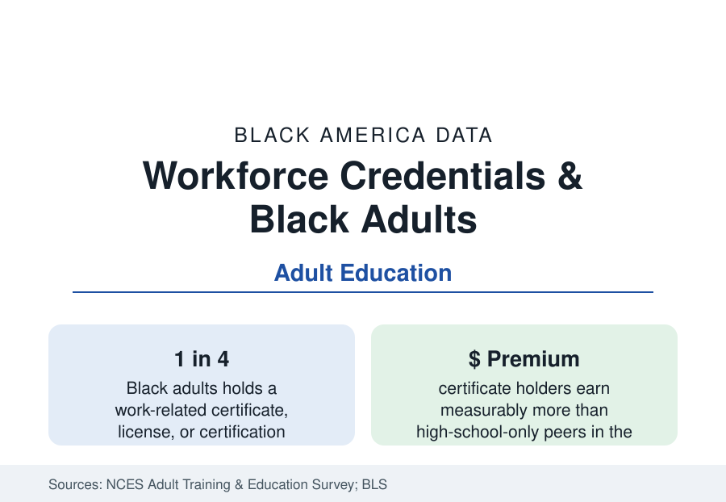

Black Education
Black Adult Learners and Workforce Credentials: The Other Half of Higher Education
Millions of Black adults hold certificates and licenses rather than degrees — the workforce credential economy the attainment tables only partly see. The NCES and labor data.

The attainment tables count degrees, but a large share of Black America's postsecondary education never issues one. Roughly a quarter of Black adults hold a work-related certificate, industry certification, or occupational license beyond high school in the federal surveys — the welders' and phlebotomists' credentials, the CDL, the cosmetology and real estate licenses, the IT certifications — in a parallel credential economy whose returns the labor data measure and whose quality the policy data contest. This article reports the adult credential file.
The Credential Stack: What Counts
The NCES Adult Training and Education Survey and the BLS license series divide the universe into its three working parts. Certificates — institution-issued, usually under a year, concentrated in health care (medical assisting, phlebotomy, CNA), the trades, cosmetology, and business services — are held by Black adults at rates comparable to or above the overall population, the community college system's certificate arm being their main issuer (the community college profile's non-degree enrollment). Certifications — industry-issued (CompTIA, the AWS welding codes, project management, the ASE automotive series) — layer on top of experience and degrees alike, with Black holding rates lower in the technology series the tech workforce file would predict. Licenses — government-issued permission to practice — cover a quarter of the entire U.S. workforce in the BLS counts, and the licensed occupations' Black shares replicate each profession's data from the earlier profiles (high in cosmetology and real estate and security, low in the credentialed health professions). The combined file's headline: for millions of Black workers, the credential — not the degree — is the operative unit of human capital, and the attainment statistics that omit it understate the population's trained skill by a wide margin.
Returns: The Field Is Everything
The earnings studies of certificates find a real but violently field-dependent premium. The Georgetown and state longitudinal analyses (which follow certificate earners into the wage records) find health care and technical-trades certificates paying the strongest returns — several thousand dollars a year above the high-school baseline, with the licensed practical nurse and the industrial-technology certificates at the top — business and cosmetology certificates the weakest (the cosmetology certificate being among the most-held by Black women and among the lowest-returning in the wage data, a mismatch the workforce literature flags), and short certificates (under a semester) frequently returning nothing measurable at all. The stackability question — whether certificates ladder into degrees with credit intact — is the system's known defect: the transfer data show most certificate credit does not apply toward degrees when adults return, so the parallel economy's savings do not compound into the degree economy's asset. The 'some college, no credential' population (the attainment profile's tens of millions nationally, Black adults in the millions) is the file's stranded middle: credits without a marketable paper.
Adult Learners: The Demographics of Return
The adult-learner population itself is profiled in the NCES data: disproportionately women, working full-time, parenting (the student-parent file: roughly a fifth of all undergraduates are parents, with Black student-parents the most numerous group), and enrolled part-time at rates that make the standard completion clocks meaningless. The adults' institutions are the system's access arm — community colleges, the for-profit sector (whose Black adult enrollment the for-profit file records at the highest shares and the worst outcomes, the gainful-employment debate's population), the HBCU adult and evening programs, and the employer-based training programs whose incidence the BLS data show skewing toward already-degreed workers (employers train the trained, the surveys' consistent finding — the adult system's version of the Matthew effect). Federal aid's adult frictions (Pell's lifetime limits consumed by earlier attempts, the satisfactory-progress rules) filter the population the data describe.
The Policy Frontier
The current reform data cluster on the seams: short-term Pell proposals (extending aid to sub-semester workforce programs, perennially before Congress with the quality-guardrail fight attached), state free-community-college programs (whose adult uptake the Tennessee and New York data track), prior-learning assessment (credit for military and work experience — the veterans profile's transcript), apprenticeship expansion (the construction file's registered programs as the gold-standard credential-with-wages), and the credential registries attempting to make the parallel economy legible (Credential Engine's counts of distinct U.S. credentials now approach a million — the legibility problem in one number). The measurement frontier is the wage-record matching itself: states that link education and earnings data can now publish program-level returns, and the Black adult population — the system's most credential-dependent — has the most at stake in whether the published returns steer the next cohort away from the dead-end paper.
Reading the Credential Data
The degree tables tell the truth but not the whole of it: Black America's skill formation runs substantially through certificates, licenses, and certifications the headline attainment rates never count. The parallel economy's data describe a population investing heavily in its own employability — in the programs nearest to hand, at returns set by the field chosen and the ladder's broken rungs. Fix the ladder, the file argues in numbers, and the attainment story itself would be retold.
More in Black Education
Black Educational Attainment: High School Parity, the College Gap
About 89 percent of Black adults hold a high school diploma and one in four holds a bachelor's degree or higher — the attainment ladder, the college completion gap, and the generational trend.
Historically Black Colleges and Universities: Enrollment and Degrees
More than 100 HBCUs enroll roughly 290,000 students and award about one in six Black bachelor's degrees — an outsized share from a small sector. The federal education data.
Black College Enrollment: 2.4 Million Students
About 2.4 million Black students are enrolled in American colleges — nearly two-thirds of them women. The NCES enrollment data by sector, level, and trend.
Source: National Center for Education Statistics, Adult Training and Education Survey; U.S. Bureau of Labor Statistics certifications and licenses data; Georgetown Center on Education and the Workforce credential research.